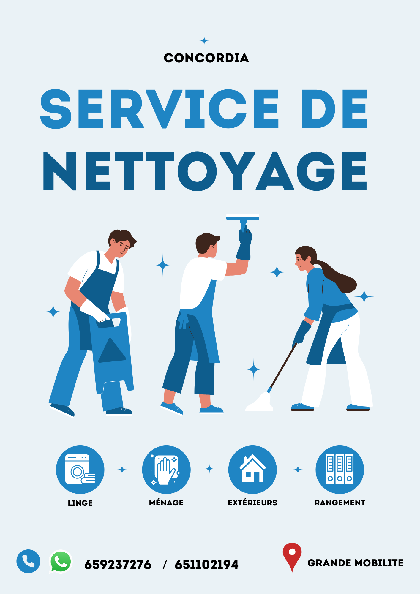

Ce flyers a été conçu sur le logiciel Canva. Ce design est l'une de mes anciennes œvres
réalisé en ce mois de Juin 2026. Il m'a fallu environ 10 minutes pour le terminer ainsi. Il consistait
a concevoir une affiche pour l'exposition des services de nettoyage à domicile à
Douala. C'est un projet professionnel fait pour une entreprise réelle et tooujours
en activité.
Le choix des couleurs qu'est le bleu et le blanc a été très bien fait.
En effet, les outils les plus utilisés par une entreprise de nettoyage sont l'eau
(incolore, inodore, insoluble) et le savon qui lorsqu'ils sont souvents utilisés
sembles avoir une teinte bleu et apres nettoyage blanche. Cela explique ma décision.
Aussi, les images utilisés sur cette affiche sont des images libres de droit d'auteur
d'où mon utilisation dessus.